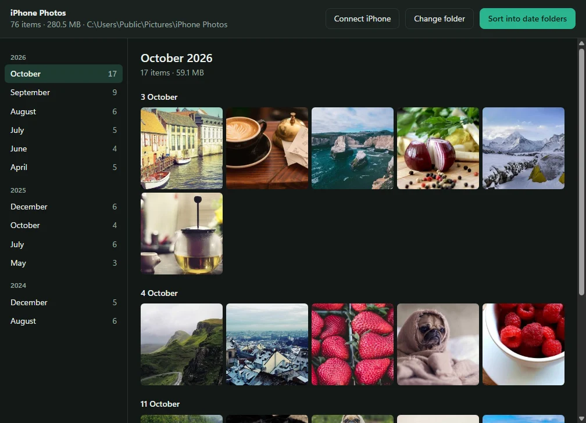

Sortwell
Clear your photo library. Keep what matters on your PC.
Sortwell finds the photos and videos that are easy to let go of: exact duplicates, similar shots, large videos and screenshots. You decide on each one with a swipe.
Not ready to lose them? Send them to your Windows PC first. They arrive in folders by year and month, and only then do you delete them from the iPhone.

On your iPhone
The scan runs on the iPhone and nothing is deleted until you confirm. Deleted items stay in Recently Deleted for 30 days.
Exact duplicates and similar shots
Copies are found and one original is kept. Shots taken seconds apart are grouped and the best one is suggested; look at the others before you decide.
Large videos and screenshots
The two things that fill a phone quietly, each in its own list with the space it would give back.
Swipe to decide, delete together
Left to delete, right to keep, undo if you change your mind. Everything you marked is removed in one confirmed step.
Ask in your own words
Type “videos over 200 MB from 2023” and review just those. On iPhones with Apple Intelligence the sentence is read on the device.
Month by month
Walk through any month of your library, newest first or largest first.
Send to your PC first
Mark photos, send them to Sortwell for Windows over your Wi-Fi, then delete them from the iPhone when you are ready.
Sortwell for Windows
A free companion that shows any photo folder by year and month, receives photos from your iPhone and can sort a messy folder into date folders, with undo.
- Install it and choose your photo folderSortwell reads when each photo and video was taken and shows them month by month. Nothing is moved.
- Click Connect iPhoneA QR code appears. In Sortwell on your iPhone, tap Send photos to your PC and point the camera at it.
- Send from any reviewPhotos go straight from the iPhone to the PC over your own Wi-Fi, encrypted, and land in folders like 2023\2023-06.

In plain terms
- What is free
- Scanning and looking through the results on iPhone, deleting up to 50 items, and browsing a folder by date on Windows.
- What Pro adds
- Unlimited deleting on iPhone, sending photos to your PC and sorting folders on Windows. Pro is bought once, in the iPhone app, as a weekly or yearly subscription or a one-time purchase. Scanning the code from an iPhone with Pro unlocks the PC; there is no licence key and no second purchase.
- Your photos
- They leave the iPhone only when you send them to your own PC, and they go straight there. No account, no ads, no tracking, and no server of ours in between. Details in the privacy policy.
- Nothing is lost by accident
- iOS asks you to confirm every deletion and keeps deleted items for 30 days. Sorting on Windows never deletes or overwrites a file and can be undone.
Questions people ask
Step by step: how to move iPhone photos to a Windows PC and keep them in date order.
- How do I move photos from my iPhone to a Windows PC in folders by date?
- Install Sortwell for Windows and choose your photo folder, click Connect iPhone, and scan the code with Sortwell on your iPhone. Photos you send land in folders by year and month, such as 2023\2023-06, named from the date each photo was taken.
- Can Sortwell sort a photo folder that is already on my PC?
- Yes. Point Sortwell for Windows at any folder of photos and videos. It reads the date each one was taken and shows them month by month without moving anything. With Pro it can move them into year and month folders, and Undo last sort puts every file back.
- Is Sortwell for Windows free?
- It is free to download, and browsing a folder by year and month is free. Receiving photos from the iPhone and sorting into date folders are part of Sortwell Pro.
- Where do I buy Sortwell Pro?
- In the iPhone app only, as a weekly or yearly subscription or a one-time purchase. Scanning the code on your PC from an iPhone with Pro unlocks the PC. There is no licence key and no second purchase.
- Do my photos go through a server or the cloud?
- No. They go straight from the iPhone to your PC over your own Wi-Fi, encrypted. There is no account and no server of ours in between.
- Does it need a cable, iTunes or iCloud?
- No. Both devices only need to be on the same Wi-Fi network.